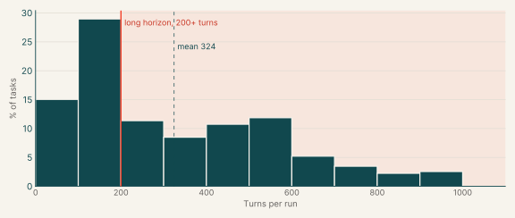

OTS task catalogs
| ProgramBench | 435 | 32.4% | 692 |
| System design | 56 | 4.2% | 476 |
| Diagnosis, Debugging, and Bug Fixing | 378 | 28.2% | 396 |
| Feature implementation | 120 | 8.9% | 345 |
| Infrastructure as code | 300 | 22.4% | 113 |
| Data engineering | 17 | 1.3% | 99 |
| Migration | 36 | 2.7% | 321 |
| Total | 1,342 | 100% |
Figure
Turns per task, all catalogs
